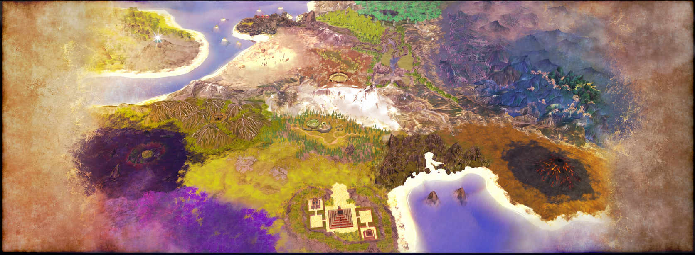
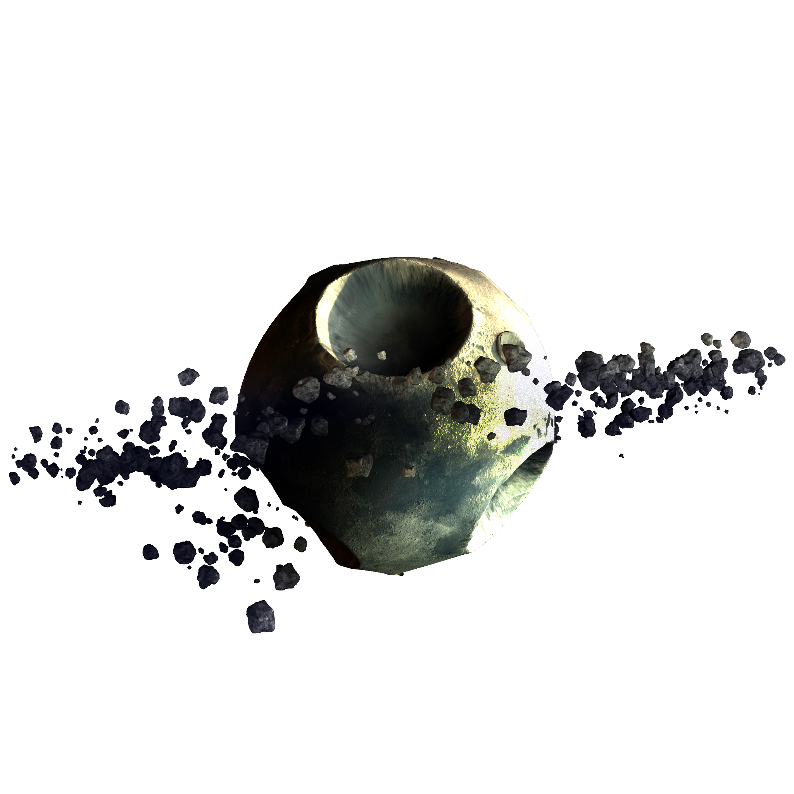

Sauria's only remaining satellite, Yume, shows the scars of its collision with the planet's other smaller moon countless millennia ago. Yume also bears a ring; more remnants from its ancient sister that still occasionally fall to the surface of Sauria. The moon itself contains strange ores that disrupt most known scanning equipment.
Objective: Head down to Sauria, find the source of the signal, while avoiding the enemy fleet.